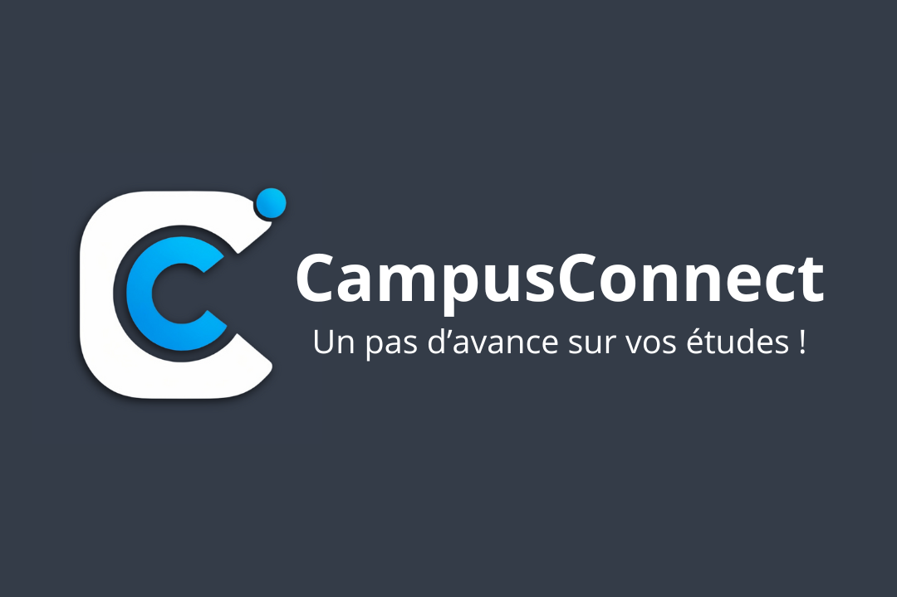
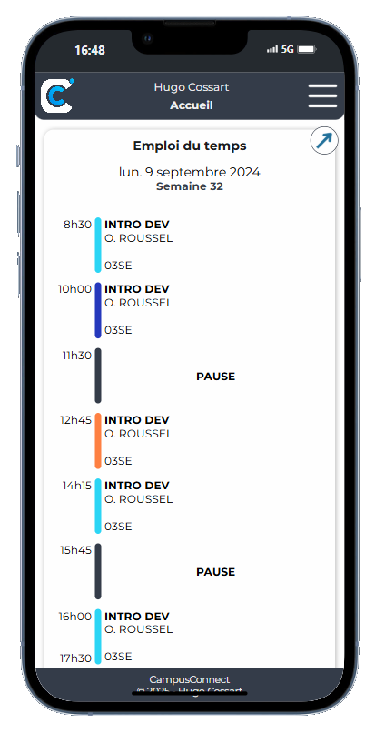
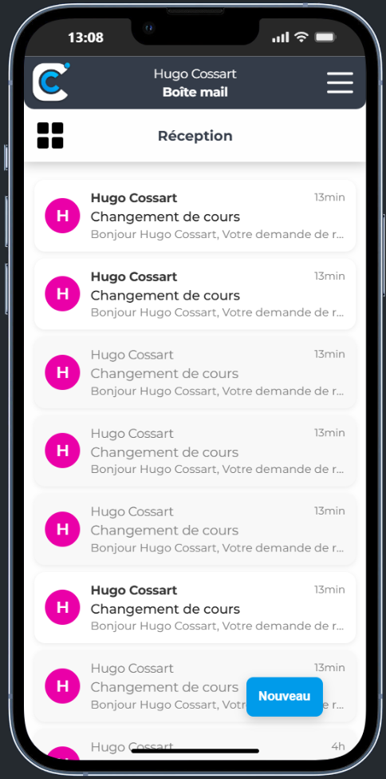

Description :
CampusConnect est une application mobile développée spécialement pour les étudiants de l’IUT de Lens (Université d’Artois). Conçue sous forme de Progressive Web App (PWA), elle permet aux étudiants d’accéder en un seul endroit à toutes les informations utiles de leur quotidien universitaire.
L’interface s’inspire de l’ergonomie de Pronote, avec une navigation fluide et intuitive. L’objectif est de proposer une expérience simple, claire et fonctionnelle, adaptée aux habitudes des étudiants.
Le projet répond à un besoin concret : faciliter l’accès aux outils numériques de l’université dans une seule application moderne. Le développement s’est appuyé sur un travail de reverse engineering des services internes afin d’assurer une intégration fluide avec l’environnement numérique de l’université.

